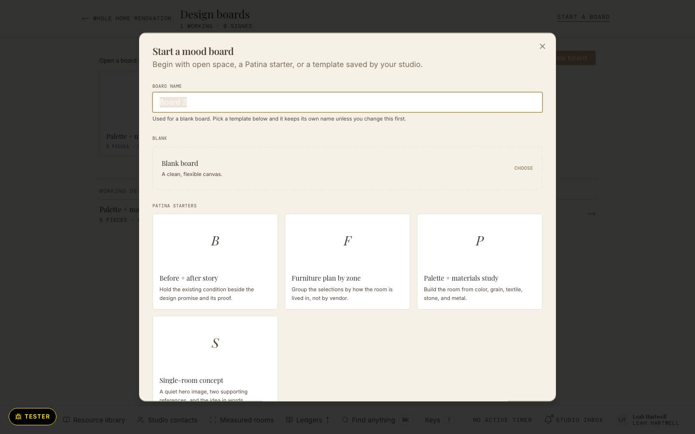

frame-boardroom-t1 · today · The board room at 1440 on the local walk seed, at rest. Chrome and canvas are a third design system: white-on-colour pill zone tags, pins as white cards with `shadow-sm` (board-item-renderer.tsx:97,195,205,246), sans captions clamped and ellipsised, a filled sand "Save and close", the canvas running to x = 1496. The selected, dragging, tags and Present states were not walked; p2–p5 cite the code that draws them today.
![Today's board room at 1440: a crowded toolbar with the board title 'Palette + mater…' overlapping a back pill, undo and redo, zoom, Fit to screen, Grid, Snap, Arrange composition, Share, Export, Present design board, Composition tools and a filled sand 'Save and close' button; a white side panel with tabs and a boxed 'Browse resource library' button; and a canvas with pill tags 'Palette' and 'Materials', a four-colour palette strip, three dashed drop zones for textile, stone and wood, and a tan note prompt, running past the right edge.](../walk/a6-board-fold-1440.jpg)
Today: walk screenshot from the local seed (SQ-800) · Illustrative fixture · Hartwell Studio is invented
frame-boardroom-p1 · proposed · answers frame-boardroom-t1 · Leah, pulling pieces onto Palette A for the Whitfields' living room (Copperfield Terrace). The board at rest with ten items: every picture item is a plate and caption, the note is text on the note edge, the empty slot prints what goes there. Zones are dashed and print their word in ink. The house Header line; every tool in one side-panel Section. No shadow, no pill, no filled act. Depends on U-Q17 (canvas included), U-Q12 (no shadow), U-Q20 (plate and caption).
Palette A
Copperfield living room
Limewash sample, “Chalk”
Oiled walnut, rift cut
Drop a stone or surface here
What repeats? What contrasts? Name the material rule that keeps the room coherent.
North light on limewash
Arden lounge chair
Tamsin sofa, 78″
Halo floor lamp
Marks at rest: today 44 · 31 · 8 · 74 · proposed measured at render
- 1 · The house Header line: back to the job, the Playfair title wraps instead of overlapping (board-room-shell.tsx:1266-1267); Present and Save and close scored secondaries, Share tertiary. The sand filled "Save and close" (:1322) retires. Source: U-Q17, WALK §6.
- 2 · One home for tools: the side-panel Section holds sources, View, Arrange and Board; the header toolbar (:1279-1300) and the "Composition tools" menu (board-room-sections-menu.tsx:89-91) fold into it. Source: uplift.md (c) area 6.
- 3 · Canvas items take plate and caption: a 1 px card-edge mat, the caption below in house type, never over the picture, never clamped (board-item-renderer.tsx:92-280). Source: U-Q20, U-Q17.
- 4 · Zones are dashed and always print their word in ink; the white-on-colour pill (BoardRoomCanvas.tsx:2904-2912) retires. Source: uplift.md (b) rule 3.
Illustrative fixture · Hartwell Studio is invented
frame-boardroom-p2 · proposed · answers frame-boardroom-t1 (today's selection was not walked; it is drawn by BoardRoomCanvas.tsx:2607-2705 and board-room-inspector.tsx:296-572) · Leah selects the Arden lounge chair. Selection is the 2 px clay-ink ring at offset 2, never a shadow or a fill; square handles sit on the ring, the rotate grip above it. The selected-piece panel is an L4′ popover beside the selection: facts as fields, acts as words, one scored secondary (Promote), Delete reference in the foot. No filled act. Depends on U-Q17 and the one focus ring (uplift.md (b) rule 2).
Palette A, warm limewash
Palette A
Copperfield living room
Limewash sample, “Chalk”
Oiled walnut, rift cut
Drop a stone or surface here
What repeats? What contrasts? Name the material rule that keeps the room coherent.
North light on limewash
Arden lounge chair
Tamsin sofa, 78″
Halo floor lamp
Selected · product
Arden lounge chair
Directions
No directions on this piece.
Order
The piece
Marks at rest: today 44 · 31 · 8 · 74 (at rest; the selected state was not counted) · proposed measured at render
- 1 · Selection is the house focus ring: 2 px --clay-ink, offset 2, replacing the 2/zoom px --color-clay border (BoardRoomCanvas.tsx:2607-2615) and the clay focus ring at :2576. Source: uplift.md (b) rule 2.
- 2 · The selected-piece panel is a popover on one stock: --paper-doc, 1 px --card-edge, 2 px radius, no shadow, 8 px mono retired (board-room-inspector.tsx:301,311,314). Ghost button grids become act words. Source: uplift.md (b)4.
- 3 · Handles: 10 px squares, paper face, 2 px clay-ink edge, on a 24 px hit area for a fine pointer and 44 px for touch (BoardRoomCanvas.tsx:2273-2274,3004-3037). Source: uplift.md (b) rule 5, est.
Illustrative fixture · Hartwell Studio is invented
frame-boardroom-p3 · proposed · answers frame-boardroom-t1 (today's drag was not walked; membership is decided silently on release by the item's centre point, BoardRoomCanvas.tsx:1850-1871) · Leah drags the Halo floor lamp, added from Tools a moment ago, into Pieces. The piece keeps its plate and caption and carries the ring; the zone under its centre answers in words: its dashed edge goes to 2 px ink and its word reads "Pieces · let go to add it here". One clay-ink guide shows the row it will align to. No shadow on the piece in flight. Depends on U-Q17.
Palette A, warm limewash
Palette A
Copperfield living room
Limewash sample, “Chalk”
Oiled walnut, rift cut
Drop a stone or surface here
What repeats? What contrasts? Name the material rule that keeps the room coherent.
North light on limewash
Arden lounge chair
Tamsin sofa, 78″
Halo floor lamp
Marks at rest: today 44 · 31 · 8 · 74 (at rest; the drag was not counted) · proposed measured at render
- 1 · The drop target answers in words while the gesture is live: a new render-only "zone under the centre" state from the move gesture (BoardRoomCanvas.tsx:1858-1865), shown on the SectionBand (:2871-2946). No data change: membership still commits on release (:1870-1871). Source: uplift.md (b) rule 3.
- 2 · The piece in flight keeps plate, caption and ring; today it only lifts its z-index (:2591-2596), which stays. Source: U-Q12.
- 3 · Guides are 1 px --clay-ink, not --color-clay (:2802-2845); the same token as the ring. Source: uplift.md (b) rule 2.
Illustrative fixture · Hartwell Studio is invented
frame-boardroom-p4 · proposed · answers frame-boardroom-t1 (today's tags were not walked; they are pills with coloured dots and `shadow-sm`, board-room-shell.tsx:168-208, and pill filters, board-add-rail.tsx:656-664) · Saturday, after the Whitfields answered. Every tag is an ink word in the item's caption, under the picture, never floating on it: APPROVED, FLAGGED, NOTED · GUEST LINK, and the internal "2 directions open" in the quiet word. The Tools Section shows Feedback: underline filter words, then rows with one state word each. Colour never grades. No filled act. Depends on U-Q13 and U-Q17.
Palette A, warm limewash
Palette A
Copperfield living room
Limewash sample, “Chalk”Noted · guest link
Oiled walnut, rift cut
Drop a stone or surface here
What repeats? What contrasts? Name the material rule that keeps the room coherent.
North light on limewash
Arden lounge chairApproved · Sat 10 Oct
Tamsin sofa, 78″Flagged · Sat 10 Oct
Halo floor lamp2 directions open
Marks at rest: today 44 · 31 · 8 · 74 (at rest; tags were not counted) · proposed measured at render
- 1 · Verdicts are ink words in the caption: the VerdictBadge pill, its coloured dot and its `shadow-sm` (board-room-shell.tsx:168-190, mounted over the photo at :1213-1217) retire; "Flagged" is ink, not clay. Source: U-Q13, U-Q12.
- 2 · The internal directions count is a quiet word in the edit caption only, never in Present (:198-208, :1218-1222). Source: board-paths DV6, U-Q13.
- 3 · Feedback filters are underline words and each row holds one state word; the pill filters and the Guest pill go (board-add-rail.tsx:656-664,688-696). Source: uplift.md (b)3.
- 4 · Zone words are the zones' tags: one word, ink, on the board stock. Source: WALK §6.
Illustrative fixture · Hartwell Studio is invented
frame-boardroom-p5 · proposed · answers frame-boardroom-t1 (Present was not walked; it renders through BoardComposition, BoardsBlock.tsx:1210 and :271-307, from board-room-shell.tsx:1498-1540) · Leah presents Palette A to the Whitfields. The tools fold away; the board fits the window on the ground; zones keep their dashed edge and word; captions keep their verdict words; internal directions never show. The header keeps the title and three acts, plus the house check "Show notes". No filled act. Depends on U-Q17.
Palette A
Copperfield living room
Limewash sample, “Chalk”Noted · guest link
Oiled walnut, rift cut
Drop a stone or surface here
What repeats? What contrasts? Name the material rule that keeps the room coherent.
North light on limewash
Arden lounge chairApproved · Sat 10 Oct
Tamsin sofa, 78″Flagged · Sat 10 Oct
Halo floor lamp
Marks at rest: today not walked in Present · proposed measured at render
- 1 · Present keeps the house header: "Edit design board" becomes "Back to editing", a scored secondary; "Show annotations" (board-room-shell.tsx:1272-1276) becomes the house check "Show notes". Source: U-Q17.
- 2 · Present captions print the same ink words as edit, from the same renderer, so what Leah composes is what the Whitfields see (BoardsBlock.tsx:421-906, painter-core.ts:353-590). Source: VD12.
- 3 · Present zones are dashed with an ink word; the white-on-colour label with `whitespace-nowrap` (BoardsBlock.tsx:291-306) retires. Source: uplift.md (b) rule 3.
Illustrative fixture · Hartwell Studio is invented
frame-boardroom-t2 · today · Start a mood board, the moment before an empty board. Choosing "Blank board" today opens a bare canvas with no words at all (no empty state in board-room-shell.tsx or BoardRoomCanvas.tsx; the empty board itself was not walked).

Today: walk screenshot from the local seed (SQ-800) · Illustrative fixture · Hartwell Studio is invented
frame-boardroom-p6 · proposed · answers frame-boardroom-t2 · Leah starts "A second sofa option" for Tom and Ellery Vance (Linden Place Living Room, Proposal) from a blank board. The board holds the one empty state: the Section's eyebrow, one sentence with its starting act inline, the closing rule. Never a dashed box. The tools are already open beside it. No filled act. Depends on U-Q17 and the one empty-state component (uplift.md (b)5).
A second sofa option
The board
1Nothing is on this board yet.
Bring a piece in from Tools, or drop images anywhere on the board.
Marks at rest: today 22 · 6 · 1 · 24 (the picker; the empty board was not walked) · proposed measured at render
- 1 · The one empty state on the board: eyebrow, sentence, inline act, closing rule, centred on the surface. New in board-room-shell.tsx beside the canvas mount (:1542-1565) when the board has no items; it is not a canvas item. Source: uplift.md (b)5.
- 2 · The Tools Section is open from the first minute, so the starting act has somewhere to go. Source: uplift.md (c) area 6.
Illustrative fixture · Hartwell Studio is invented